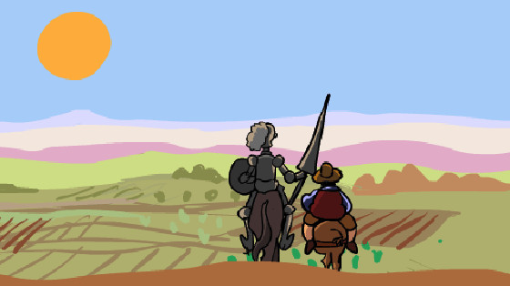

La aventura continúa
¿Don Quijote estaría orgulloso?
Hemos llegado al final de nuestra aventura con don Quijote y su fiel escudero Sancho Panza. Antes de despedirnos durante un tiempo de la historia del "caballero de la triste figura" es muy interesante que recordemos y revisemos todo lo que hemos hecho y cómo lo hemos hecho. ¡Seguro que don Quijote estaría más que orgulloso de nosotros!

Dedicaremos unos minutos a esta revisión de nuestro trabajo. En primer lugar, anotaremos individualmente en nuestros cuadernos nuestras propias respuestas e impresiones. Después, haremos una puesta en común con aquellas personas de la clase con las que hayamos trabajado en parejas o grupos de tres.
En un lugar de la Red
Si queremos aprender muchas cosas más de este libro, de sus protagonistas y de su autor, Cervantes, podemos consultar algunos de los muchos recursos que hay en Internet.
A lo mejor, podemos consultarlos junto con nuestros amigos, nuestros padres o nuestros hermanos.
- "Dulcinea del Toboso". La historia de don Quijote y su enamorada en dibujos animados. Tus padres (y tus abuelos) la vieron así.
- "Don Quijote de la Mancha". El gran juego de don Quijote nos planteará el reto de demostrar cuánto sabemos acerca del libro.
- "Don Quijote de la Mancha". Serie de televisión a través de la que puedes ver la historia completa de Don Quijote.
- "Fichas para pintar". En esta página encontramos dibujos y marcapáginas de Cervantes. Podemos imprimirlos para colorearlos y crear unos regalos estupendos para el Día del Libro.
Nuestro Quijote es de todos
Al revisar nuestro trabajo, nos habremos sorprendido de la cantidad de tareas interesantes que hemos hecho y de los recursos tan increíbles que hemos creado.
¿No pensamos que estaría muy bien dar a conocer todo este trabajo? ¿No sería estupendo que nuestros compañeros y compañeras del centro, nuestras familias, nuestros vecinos y todo nuestro grupo de amigos y amigas pudiesen aprender y disfrutar con El Quijote gracias a nosotros?
Hay muchos recursos que podemos utilizar y muchas actividades que podemos plantearnos. Nosotros en clase con nuestro profesor o profesora, decidiremos cuál nos resulta más atractiva o cuál podemos hacer con los recursos que tenemos. También podemos dividirnos en grupos y que cada uno elija una de las propuestas.
A continuación tenemos sugerencias para hacer llegar a todos lo que hemos hecho y aprendido. ¿Se nos ocurre alguna otra idea? Propongámosla a todo el grupo:
- Una exposición de fotos en la que mostremos todos los trabajos: los marcapáginas, los molinos, fotos de las dramatizaciones, dibujos de El Quijote...
- Hacer entradas en el blog de aula con un texto que explique nuestro trabajo y con ilustraciones y enlaces.
- Recopilar en un pequeño libro (en formato papel o digital) todas las narraciones de las aventuras.
- Diseñar un Site en el que incluyamos todo lo que hemos generado: los textos, las imágenes, los vídeos de las actividades.
- Grabar y compartir vídeos que expliquen el trabajo de la secuencia y muestren algunas de nuestras creaciones.
- Hacer por equipos una exposición de diez minutos para contar a otras clases (y tal vez a nuestros padres y profesores) todo lo que hemos hecho en esta secuencia...
Obra publicada con Licencia Creative Commons Reconocimiento Compartir igual 4.0